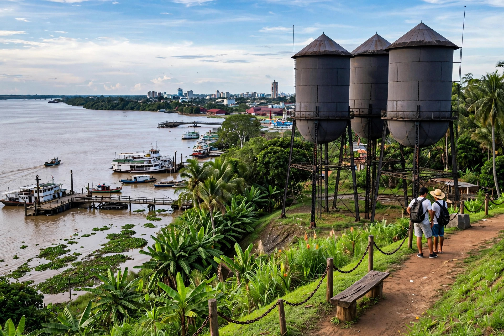

Porto Velho
Porto Velho is the capital of the Brazilian state of Rondônia, on the Madeira River in the upper Amazon basin. It was founded during construction of the Madeira–Mamoré Railway, built to bypass the Madeira rapids, and today is a river port and hydroelectric centre.
| Country | Brazil |
|---|---|
| State | Rondônia |
| Founded | 2 October 1914 (origins 1907) |
| Population | about 460,000–500,000 |
| Time zone | UTC−4 |

History
The town arose in 1907 as the construction base of the American-backed Madeira–Mamoré Railway, an arduous project through rainforest that claimed many workers' lives. Porto Velho became capital of the Guaporé (later Rondônia) territory in 1943 and of the state in 1981. Agricultural colonisation along the BR-364 highway drove rapid growth in the 1970s–80s.
Geography and economy
The city stands on the right bank of the Madeira, one of the Amazon's largest tributaries. Gold dredging, timber, agriculture and two large hydroelectric dams — Santo Antônio and Jirau — shape the modern economy, and the port ships soy from Brazil's centre-west down the Madeira waterway.